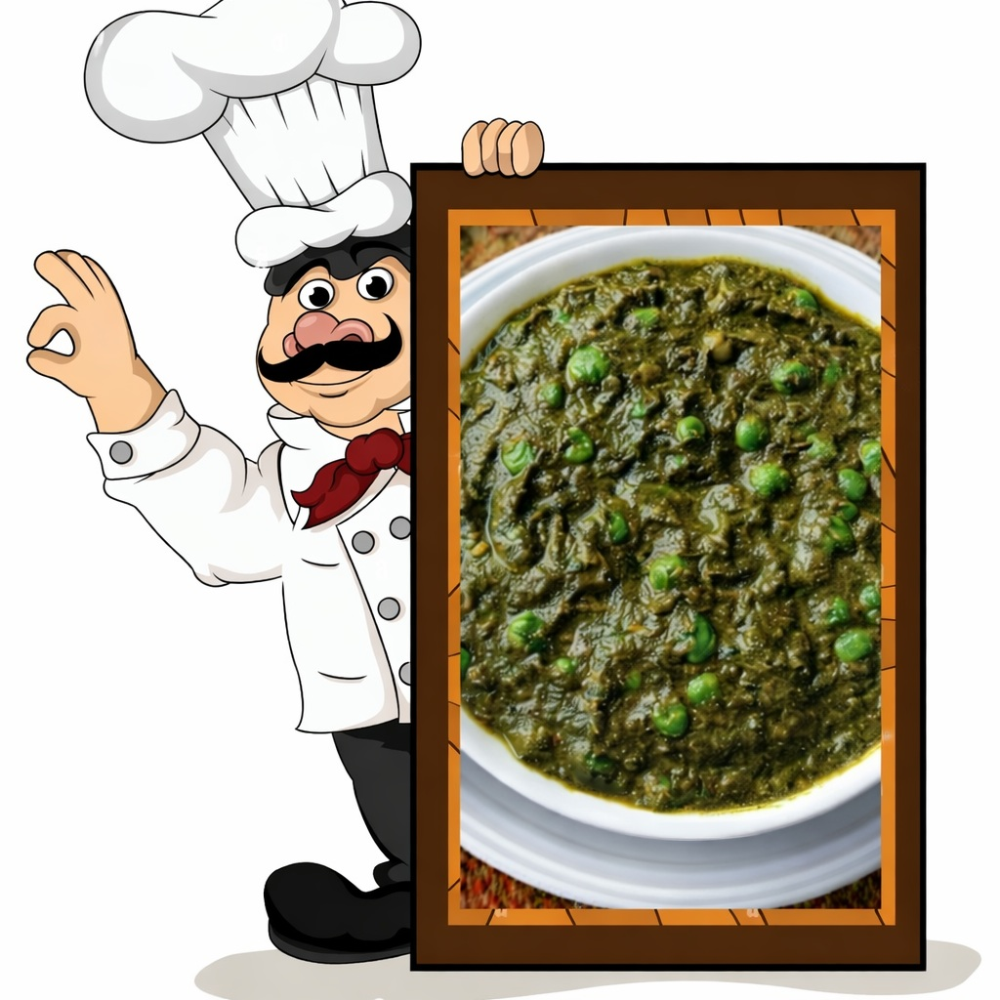

Palak Matar
Ingredients
- 🥬 Spinach – 500 g
- 🍅 Tomato – 1
- 🧅 Onion – 2 medium
- 🟢 Green peas – 1 cup
- 🌿 Kasuri Methi
- 🌰 Cumin & Jeera seeds
- 🧂 Turmeric, Chilli, Salt
- ✨ Dhaniya, Garam Masala

Method
- 🥬 Boil spinach for 3 minutes.
- ❄️ Strain the spinach and immediately transfer it to cold water.
- 🌀 Grind the spinach into a smooth puree.
- 🔥 Heat 4 tablespoons of oil in a pan.
- 🌰 Add cumin seeds and jeera seeds.
- 🧅 Add finely chopped onions.
- ✨ Sauté until the onions turn golden brown.
- 🧄 Add ginger–garlic paste and roast for 1 minute.
- 🍅 Add one chopped tomato and cook for 3 minutes.
- 🧂 Add ½ tsp turmeric powder, ½ tsp coriander powder, 1 tsp red chilli powder, and ½ tsp cumin powder.
- 🟢 Add 1 cup green peas and cook for 3 minutes.
- 🌿 Add salt to taste, spinach puree, kasuri methi, ½ cup water, and ½ tsp garam masala. Cook for another 3 minutes and serve hot 😋